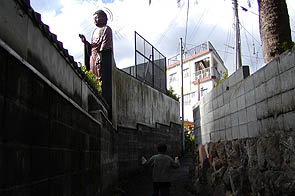
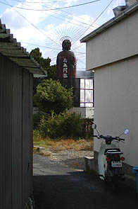
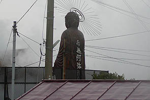
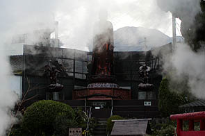
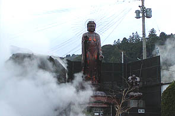
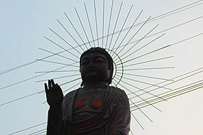
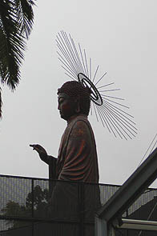
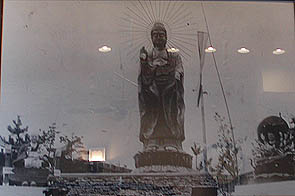

金龍地獄大仏とスギノイパレス/大分県別府市
別府と言えば一も二も無く温泉である。
別府には昭和の温泉文化が生み出したモノがごまんとある。秘宝館、ストリップ、別府タワー・・・
あと、お湯をつけると着物の絵が消えてヌードになるタオルとか。
最近流行りの癒し系温泉などが逆立ちしてもつくれない、というかつくらないキワキワの観光施設。
その温泉文化遺産の宝庫に花開く温泉文化のひとつ温泉大仏という素晴らしいジャンルの大仏を２つ紹介しよう。
別府最大規模を誇るスギノイパレスという巨大浴場がある。
どれくらい広いかというと広すぎて裸でうろうろしているのが恥ずかしい位広い。入ったのは花の湯というジャングル風呂。
こちらは場所が場所だけに写真はないが広大な大浴場のど真ん中に6メートルの大仏（薬師如来）と背中合わせに4メートルのマリア観音がいる。
これが世田谷のおおくら大仏のようにぐるぐる回転しているのだ。くり返すが風呂のど真ん中で。
しかも時計のようなスムーズな動きではなく数秒に一回、ズズッ、ズズッっとまるで下に人がいて人力で廻しているかのような動き。
温泉に浸かりながら見上げる大仏も又愉し。
さらにタイ寺院の形のサウナや桃太郎風呂、弁天風呂などなどもはや風呂というより裸で参拝する珍寺だ。
日替わりで男女交代となっているので夢の湯は入れなかったがリニアモータカーや大鳥居があるそうだ。
ちなみに別府名物砂湯もあるがスコップが置いてあるだけの完全セルフ方式。どうやって自分を砂に埋めたら良いんでしょう？
昭和40年代テイストを色濃く残すこの驚異の温泉、詳しくは杉の井ホテルのオフィシャルHPに詳しく出ているのでそちらを見て絶句してくださいませ。
緊急追記！
スギノイパレス夢の大温泉は現在リニューアル中で2003年11月からは花の大温泉もリニューアル工事に入る。
リニューアル後は現在ある大仏等、愉快なアトラクションはほとんど消滅してしまうらしいので、回転大仏を見たい御仁は急ぐべし！
2003.5.10.
一方、別府名物地獄めぐりのひとつ、金龍地獄にも大仏がある。
地獄めぐりとは温泉の吹き出ているところを地獄に見立てた観光地で、鬼の拷問シーンが楽しいあの地獄巡りとは違うので念のため。
  
で、大仏である。背中には南無阿弥陀仏の文字が眩しい。大きさは5〜6メートル位か。スギノイパレスの大仏さんと良い勝負である。
ただしこちらは回らないが。
地獄めぐりは比較的密集しているので他の地獄からもよくみえる大仏さんだ。
 
で、地獄に行ってみる。
何故か湯煙を吐きまくる龍などがおり、さして広くない場内は煙りだらけ。
その隙間を縫って大仏さんがあらわれる。
鋳造製っぽく造ってあるが多分コンクリだと思います。近付いてペチペチ叩けば判るんですけど・・・
光背が付いているタイプ。珍しい。
 
大仏さんの足元には弘法大師が、右側には十二支守り本尊が並ぶ。これは地獄なのか？

一通り見終わって入口のロビーで温泉卵を頬張っているとこんな写真が飾ってあるのを発見。
これってここの大仏じゃないぞ。しかも写真、えらく古そうなんですけど。
温泉卵を持って来てくれた地獄の方（鬼じゃないよ）に聞いてみるとこの写真は昭和10年のものだそうだ。
・・・という事は別府大仏と同じ頃に別府にもうひとつ大仏があったという事？
ハナシによればこの大仏は台風で袖の部分が壊れてしまい、現在の大仏さんに建て替えられたそうである。
ライトが反射していて見にくくて恐縮だが写真の左にある弘法大師像は今もあるが、右にあるかなりファンキーな千手観音は近所のひょうたん温泉に移転したそうだ。
そういえばひょうたん温泉って戦前にひょうたんの形をしたホテルがあったそうだ。何で別府ってそんなのばっかりなんだろう・・・
おまけ
別府市街を見下ろす山の上に城がある。
貴船城というその城は白蛇様を祀る宗教施設であった。
中に入り白蛇様をナデナデしてきました。一応神道系の宗教施設だったみたいです。
写真を撮るのを忘れてました。詳しくはこちらかこちらを。
2002.11.
追記；金龍地獄、閉鎖されてました。（2022.01.）
珍寺大道場 HOME